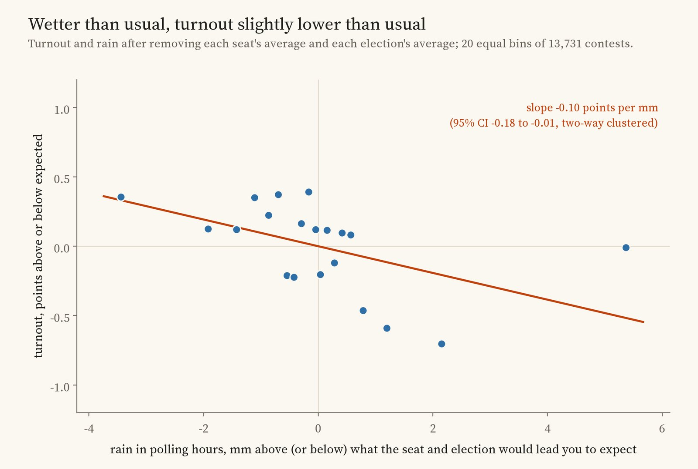
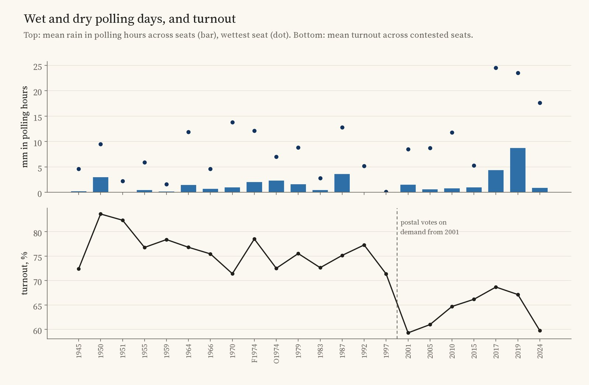
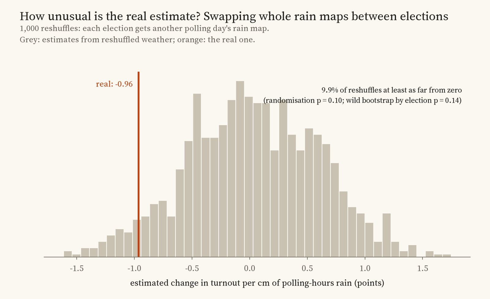
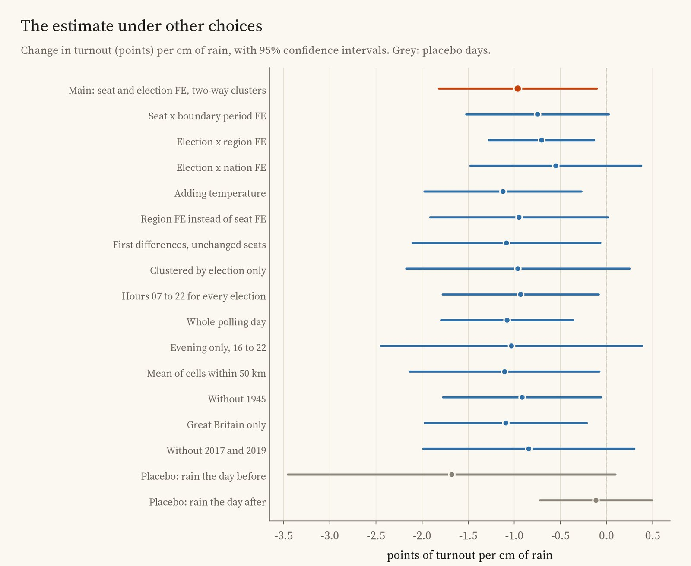
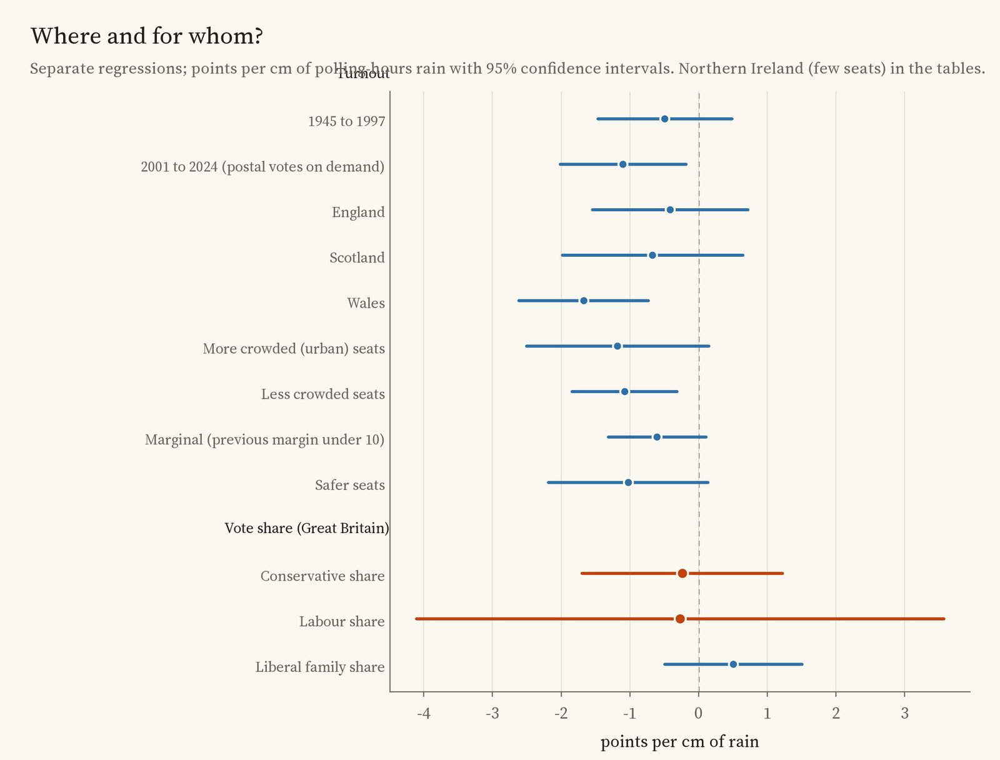
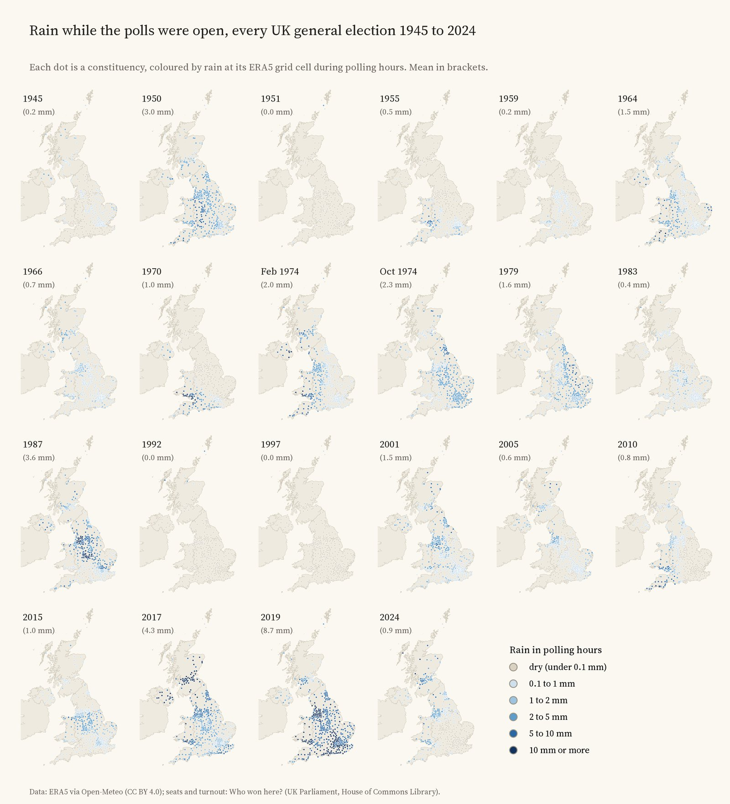

Every UK constituency at every general election since 1945 (dots), coloured by how much rain fell while its polls were open. Drag the slider through the elections and tap a seat for its turnout and its rain hour by hour.
Every British election night someone blames the weather. Rain on polling day is supposed to keep the less committed at home, and some say it helps one party more than another. Studies in the United States, the Netherlands, Denmark and elsewhere have found small effects; others, in Sweden for example, found none. Britain has had little such work across many elections. So I matched each of the 14,052 constituency contests at the 22 general elections from 1945 to 2024 to the rain that fell on it, hour by hour, while its polls were open.
The fairest comparison is a seat with itself: the same constituency at different elections, wetter or drier than usual, set against how turnout moved across the whole country at each election. On that comparison, each centimetre of rain in polling hours went with turnout 0.96 points lower (95% confidence interval -1.82 to -0.11, across 13,731 contests). That is about a tenth of a point per millimetre. A wet but ordinary polling day, 5 mm while the polls were open, would cost about half a point.

Turnout and rain relative to each seat's usual and each election's average, in 20 equal groups.
That is close to what a large Danish study found (0.95 points per centimetre) and larger per centimetre than the classic American estimate of just under one point per inch. But it is small. Most of the year to year change in turnout has nothing to do with the weather: turnout fell from 71.4% in 1997 to 59.3% in 2001, and 2001 was not unusually wet.

Rain in polling hours and turnout, election by election.
Rain does not fall seat by seat. A weather front soaks a whole region at once, and there have been only 22 general elections since 1945, so the real amount of independent information is much smaller than 13,731 contests suggest. Two checks take this seriously. A wild bootstrap that treats each election as one block gives p = 0.14. And swapping whole national rain maps between elections, so that every seat gets the rain it had on a different polling day, produces estimates as far from zero as the real one 9.9% of the time. By those standards the effect is not established: it is suggestive, no more.

Estimates from 1,000 reshuffles of whole rain maps between elections, and the real one.
A placebo adds a further doubt. Rain on the day before polling day, which cannot have kept anyone from the polls on the day, shows an association at least as large (-1.68 points per centimetre, CI -3.46 to 0.10). Rain the day after shows nothing (-0.12). Wet weather the day before may genuinely matter, through campaigning or mood, or some places may simply be both wetter and lower in turnout in some years for other reasons. Put through the same two checks, the day-before link looks at least as unusual as the polling-day one (p = 0.08 and 0.04). Either way, it is a warning against reading the main estimate as a clean effect of rain on voters.

The estimate under other choices, with 95% intervals.
The estimate is negative under every other choice I tried, between -1.12 and -0.55 with other fixed effects or first differences, and between -1.11 and -0.93 with other ways of measuring rain. It stays negative when any one election (-1.49 to -0.75) or any one region (-1.13 to -0.57) is left out. Several of those intervals include zero.
The old idea that rain helps the Conservatives finds no support here. Polling-hours rain has no clear link with the Conservative share (-0.24 points per centimetre, CI -1.70 to 1.22) or the Labour share (-0.27, CI -4.11 to 3.57), in Great Britain.
I expected postal votes on demand, available in Great Britain from 2001, to blunt the effect of rain. The opposite appears: the estimate is -0.49 for 1945 to 1997 and -1.10 for 2001 to 2024, though the earlier one is uncertain and the two wettest elections, 2017 and 2019, both fall in the later period. Crowded urban seats and less crowded ones, marginal and safe seats, look much the same.

By period, nation and type of seat, and for party vote shares.

Rain in polling hours at every election. 2019 was by far the wettest; 1951, 1992 and 1997 were almost dry everywhere.
Elections. Every contested constituency at the 22 general elections from 1945 to 2024, with its turnout and a point for the seat, from my dataset Who won here?. I left out the university seats of 1945 (their electors voted by post from anywhere) and 22 seats whose 1945 poll was, or may have been, postponed for local wakes weeks.
Rain. Hourly rain from the ERA5 reanalysis, through the Open-Meteo archive, at the grid cell nearest each seat, summed over the hours the polls were open: 8am to 9pm in 1945 (assumed: candidates could ask for an extra hour at either end), 7am to 9pm from 1950 and 7am to 10pm from 1970, following the House of Commons Library's history of polling hours.
The comparison. Turnout regressed on rain with a fixed effect for each seat name and each election, with uncertainty clustered by seat and by election and region, then checked with a wild bootstrap by election and with whole rain maps reshuffled between elections. I wrote down the plan before running the models and report it as planned.
What this cannot say. ERA5 is coarse, about 30 km across, so many city seats share one value and rain is measured with error; that tends to shrink the estimate towards zero. Turnout is per seat, not per voter, so this cannot say who stayed at home. Seats are points, and boundaries changed. Postal votes cast before polling day are counted in turnout but were never rained on. And with only 22 elections, the honest answer is that rain may lower turnout a little, but the data cannot rule out that it makes no difference at all.